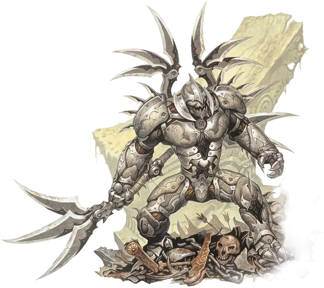

Лорд Лезвий
The Lord of Blades
Средний Гуманоид (Кованый), законно-злой, именной НИП

Класс Доспеха 19 (природный доспех)
Хиты 195 (23к8 + 92)
Скорость 40 футов
| мод | спас | ||
|---|---|---|---|
| СИЛ | 20 | +5 | +11 |
| ЛОВ | 15 | +2 | +2 |
| ТЕЛ | 18 | +4 | +10 |
| мод | спас | ||
|---|---|---|---|
| ИНТ | 19 | +4 | +10 |
| МДР | 17 | +3 | +9 |
| ХАР | 18 | +4 | +4 |
Навыки Атлетика +11, Восприятие +9, История +10, Магия +10
Сопротивление урону некротическая энергия, яд
Иммунитет к состояниям очарование, испуг, истощение
Чувства пассивное Восприятие 19
Языки Общий, Дварфийский, Драконий, Эльфийский
Опасность 18 (20000 опыта)
Бонус мастерства +6
Особенности
Покрытие из адаманта. Любое критическое попадание по Лорду Лезвий становится обычным попаданием.
Клинковый доспех. Существо, которое пытается схватить или было схвачено Лордом Лезвий, получает 13 (3к8) рубящего урона.
Атака в броске. Если Лорд Лезвий переместится по крайней мере на 10 футов прямо к цели, а затем в том же ходу попадает по ней своим адамантиновым шестиконечным клинком, цель дополнительно получает 11 (2к10) рубящего урона. Если цель - существо, она должна преуспеть в спасброске Силы Сл 19, иначе оно будет отброшено на расстояние до 10 футов и сбито с ног.
Использование заклинаний. Лорд Лезвий является заклинателем 20-го уровня. Его базовой характеристикой является Интеллект (Сл спасброска от заклинания 18, +10 к попаданию атаками заклинаниями). Он может накладывать следующие заклинания изобретателя:
• Заговоры:огненный снаряд (см. "Действие" ниже), волшебная рука, починка, фокусы
• 1 уровень (4 ячейки):поспешное отступление, убежище, волна грома
• 2 уровень (3 ячейки):размытый образ, раскаленный металл, палящий луч, видение невидимого
• 3 уровень (3 ячейки):рассеивание магии, полет, ускорение
• 4 уровень (3 ячейки):свобода перемещения, верный пёс Морденкайнена
• 5 уровень (2 ячейки):оживление вещей, силовая стена
Стойкость кованого. Лорд Лезвий имеет преимущество на спасброски от отравления, а так же иммунен к болезням и его нельзя магически усыпить.
Действия
Мультиатака. Лорд Лезвий совершает три атаки: две-своим адамантиновым шестиконечным клинком и одну-своими клинковыми крыльями.
Адамантиновый шестиконечный клинок. Рукопашная атака оружием: + 11 к попаданию, досягаемость 10 футов, одна цель. Попадание: 21 (3к10 + 5) рубящего урона плюс 7 (2к6) урона силовым полем.
Клинковые крылья. Рукопашная или дальнобойная атака оружием: +11 к попаданию, досягаемость 5 футов или дистанция 20/60 футов, одна цель. Попадание: 8 (1к6+5) рубящего урона.
Огненный снаряд (Заговор). Дальнобойная атака заклинанием: +10 к попаданию, дистанция 120 футов., одна цель. Попадание: 22 (4к10) урона огнём.
Легендарные действия
Лорд Лезвий может совершить 3 легендарных действия, выбирая из представленных ниже вариантов. За один раз можно использовать только одно легендарное действие, и только в конце хода другого существа. Лорд Лезвий восстанавливает использованные легендарные действия в начале своего хода.
Атака. Лорд Лезвий совершает одну атаку оружием.
Заговор. Лорд Лезвий колдует один из своих заговоров.
Заклинание (стоит 2 действия). Лорд Лезвий накладывает заклинание 2-го уровня или ниже из своего списка заклинаний, которое имеет "1 действия" для накладывания.
Стремительный клинок (стоит 3 действия). Лорд Лезвий перемещается на свою скорость, не провоцируя атак, а затем совершает одну атаку своим адамантиновым шестиконечным клинком. Он может совершить одну атаку клинковыми крыльями по каждому существу, мимо которого он переместится.
Описание
Лорд Лезвий – это воинственный вождь, который разорвал все связи со своими бывшими хозяевами. Он основал нацию для своего народа глубоко в Землях Скорби, с центром в большой крепости, куда могут прийти кованые со всего Кхорвайра и почувствовать себя «своими». Никто не знает, какие планы Лорда Лезвий строит, но многие опасаются, что он намерен создать легион кованых-фанатиков, готовых выступить из Земель Скорби, чтобы обрушить свой гнев на своих бывших хозяев.
Некоторые легенды утверждают, что Лорд Лезвий возглавлял войско Сайра в Последней Войне. Другие называют его новейшим кованым. Возможно, он последний, кто был создан в кузницах Каннит до того, как они были уничтожены по Тронхолдскому Соглашению. Одна история гласит, что Лорд Лезвий был причиной разрушения Сайра и предупреждает, что он планирует повторить День Скорби в каждой из оставшихся Пяти Наций. Какой бы не была истина, но Лорд Лезвий является маяком свободы для всех кованых.
Природа кованых. Лорд Лезвий не нуждается в воздухе, еде, воде или сне.